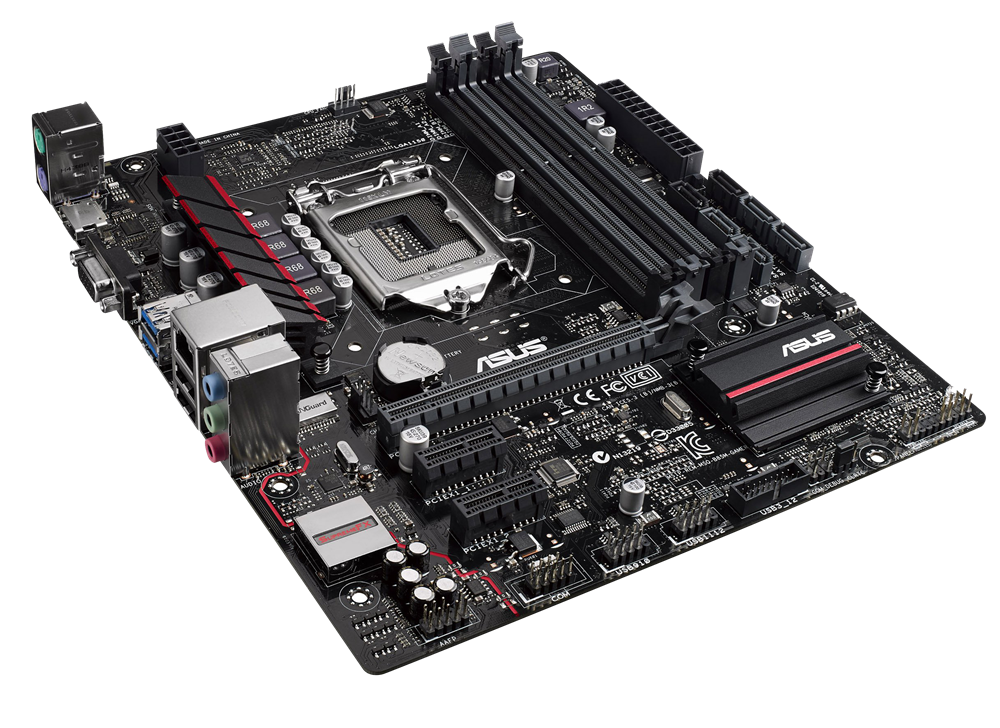

MOTHERBOARD
Txartel nagusia, ama plaka edo plaka nagusia ordenagailua bezalako sistema elektroniko konplexu bat osatzen duen plaka da. Ordenagailu barneko hardwarea elkar lotzen dituen plaka da.
Ohiko ordenagailu bat eraikitzeko mikroprozesagailua, memoria eta beste oinarrizko osagai batzuk txertatzen dira ama plakan.
Bi zatitan banatzen da, iparraldeko zubia(northbridge) eta hegoaldeko zubia(southbridge). Lehenengoak mikroprozesadorearen, RAM memoriaren eta grafikoak prozesatzeko unitatearen artean interkonexioaren kudeaketa egiten du; eta bigarrenak, periferikoen eta biltegiratze gailuen artean, diska gogorra edota disko-optiko unitatea bezala. Xaflaz eginik dago eta kutxa baten barruan instalatuta dago eta hor hainbat motako atakak ditu, edozein barne-konektore edota kanpo-konektore konektatzeko eta beste entxufe ditu zerbait instalatzeko nahia baldin badago.
BUS MOTAK
PLAKA MULTIPROZESADOREA
Ama plaka mota honek hainbat prozesadore onartu ahal ditu(2,4,8 edo gehiago).Ama plaka hauek hainbat mikroprozesadore zokalo dituzte,beraz fisikoki mikroprozesadore ezberdin konektatzea uzten du. Bi prozesadore ama plaka batean daudenean, bi modu daude erabiltzeaz:
Arkitektura bikoitzeko prozesadorea Linux, lehenengo sistema operatiboa kudeatu zuen x86n. Hala ere, kudeatutako hainbat prozesadore aurretik existitzen ziren beste plataformetan eta beste sistema operatiboetan. Linux 2.6.x multiprozesadore simetrikoak kontrolatzen ditu, eta memoriazko arkitekturak ez daude banatuta uniformeki. Fabrikatzaile batzuk, 8 prozesadore onartu ahal dituen ama plaka eskaintzen dute.
